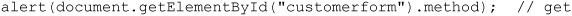
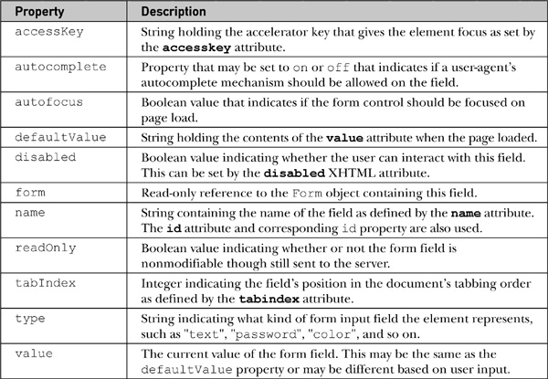
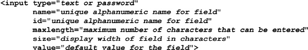
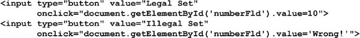
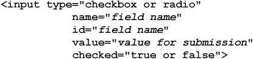
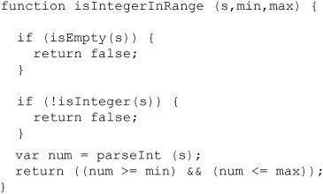

One of the most common uses of JavaScript is for checking the contents of forms before sending them to server-side programs. Commonly known as form validation, this use of JavaScript was actually one of the original driving forces behind the development of the language and, as a result, many of the techniques presented in this chapter will work in even the oldest JavaScript implementations. However, progress has been made in this ancient application of script code because HTML5 improves our possibilities. Throughout the chapter, we will also remind readers that, while the script syntax of this common use of JavaScript may be simple, it is consistently misapplied. To address this trend, we will try to present many execution details, ranging from progressive enhancement to usability improvements, to motivate better use of the techniques.
It can be quite annoying to fill out a form on a Web site only to have the page returned with complaints about malformed data after a round trip to the server. With JavaScript, we can cut down on the frustration of waiting for failure and improve the usability of Web forms by checking the data before it is submitted to the server for processing.
There are two primary approaches we can take to validate form entries using JavaScript. The first involves checking each field as it is filled in, either upon blur or using a keyboard mask if appropriate. The second approach is to check all the fields of a form when a submission is triggered. Each approach has its pros and cons from a usability and coding perspective, so we’ll make sure to explore each in turn.
Understand that JavaScript-based form validation is primarily a usability convenience. Web servers also benefit from form validation. Because incomplete or invalid form field entries can be caught before submission, the number of interactions the browser will make with the server decreases and the apparent speed of form use increases. JavaScript validation provides no truly meaningful data security. Client-side form validation is entirely circumventable by malicious end users, as all client-side technology can be. Readers are strongly warned to remember this limitation and never assume that data is sanitized on the server side, as validations may not have been applied. All data consumed on the server side ultimately should be considered tainted and rechecked if there is to be any hope for secure Web application development.
To start our discussion, let’s take a look at how to access a <form> tag using JavaScript.
Traditionally, JavaScript provides access to the forms within an HTML document through the Form object (known as an HTMLFormElement in the DOM), which is a child of the Document object. As with all Document objects, the properties and methods of this object correspond to the various features and attributes of a <form> tag, the common attributes of which are summarized here:
As we have seen already in our discussion of object models, the JavaScript properties for the Form object should correspond to the attributes of the <form> tag. A summary of the most useful properties available from JavaScript’s Form object is presented in Table 13-1.
Table 13-1 Properties of the Form Object
Traditionally, form objects have only two form-specific methods. The reset() method clears the form’s fields, similar to clicking a button defined by <input type=“reset”>. The submit() method triggers the submission of the form, similar to clicking the button defined by <input type=“submit”>. In addition to the ability to trigger form reset and submission, you often want to react to these events as well, so the <form> tag supports the corresponding onreset and onsubmit event handler attributes. As with all events, handler scripts can return a value of false to cancel the reset or submit. Returning true (or not returning a value) permits the event to occur normally. Given this behavior, the following form would allow all form resets but deny submissions:
NOTE A potentially surprising aspect of calling the submit() method is that it typically bypasses any onsubmit event handler. The reasoning is that since you’re triggering submission with script, your script should also be capable of doing whatever the event handler does.
HTML5 adds a new validation method to the Form object. The checkValidity() method returns true or false, depending on whether or not the form fields are valid. All of the common methods of the Form object are summarized in Table 13-2.
Table 13-2 Methods for Form Objects
Before exploring the examination and manipulation of form fields, we need to make sure that we are capable of accessing a Form properly. This is just a brief reminder of what is covered in Chapter 9. In general, a form is accessed by name, position, or id. To illustrate these methods, we present the following simple form:
If we assume this is the first form in the document, we might access the form using the traditional document.forms[] collection indexed by numeric value:
Alternatively, we could use the name attribute of the form to retrieve it via the collection:
Traditionally, a path access name is also supported, like so:
Of course, since standard DOM methods can be employed, we can use the common getElementById() method:

Retrieving the fields of the forms is easily performed using the getElementById() method, assuming a unique id value. However, other access methods have been widely employed for field access even in the oldest browsers.
First we note that each form contains a collection of form fields that can be accessed through the elements[] collection. So, given the form of the previous example, document.customerform.elements[0] refers to the first field. Similarly, we could access the fields by name, such as with document.customerform.firstname or document.customerform.elements[“firstname”]. We should also point out that we may employ a DOM method called getElementsByName(“firstname”).
Given that this may be run on a document, it could return many values since the name attribute does not have to be unique:
When run on a single form, it will likely return a single value except in the case of radio buttons, which purposefully share the same name value:
We note that, while this is the more modern way of accessing fields by the name attribute, it actually is somewhat clumsy to use:
Given the awkwardness of the syntax, it is no wonder that the traditional syntax lives on.
Finally, we should note that, since we have a collection of form fields, we could iterate over the elements[] collection:
We should note that we can use a shorthand for looking at the number of fields in a form just looking at the length property of the Form itself, like so:
Before taking a look at the objects that represent the different kinds of form fields, we present a brief example to demonstrate the access of the various Form object properties and methods:
ONLINE http://javascriptref.com/3ed/ch13/formobject.html
A rendering of this example is shown in Figure 13-1.
Figure 13-1 Sample rendering of Form object eExample
HTML 4 supports a variety of form elements, including single-line and mutiline text boxes, password fields, radio buttons, checkboxes, pull-down menus, scrolled lists, hidden fields, and numerous types of buttons. HTML5 adds even more, including sliders, type-ahead lists, color pickers, and more. This section presents a short review of each of these tags and shows how JavaScript can be used to access and modify their properties.
All <input> tags are represented in the DOM as HTMLInputElement objects. These objects share a number of properties related to their functionality as form fields, as well as the HTML standard properties you would expect (id, title, lang, and so on.). The properties common to most all objects representing <input> tags are shown in Table 13-3. Specific types of input elements, such as <input type=“image”>, have additional properties and methods specific to the type of input they handle. For example, input with type equal to “image” defines an src attribute, which is undefined with other type values.
Table 13-3 Common Properties on Form Field Objects

A few properties do require some brief discussion. First, the form property references the Form object that the element is enclosed within. So, given
the value of document.myform.field1.form is the Form object named myform. Of course, you might wonder about the usefulness of this, since we knew the form name to access the property. In short, it is most useful when a function or object is given some generic form field object without any indication of the form it is enclosed within.
The next property that requires a short discussion is defaultValue. This property holds the string set by the value attribute in the original HTML file. So, given <inputtype=“text” name=“testfield” value=“First value”> within the form named testform, the value of document.testform.testfield.defaultValue would be the string “First value”. This will also be held in the property document.testform.testfield.value at first. However, as the user changes the contents of the field, the value property will change to reflect the user’s modifications, while the defaultValue property will remain constant. In fact, executing reset() on the form sets all the form’s elements’ values to their default values. Interestingly, while it is obvious that value is changeable both by the user and by script, it turns out that defaultValue is also defined to be settable by script, though the value of this is not as obvious.
In traditional JavaScript as well as under DOM Level 1, all forms of text fields support the blur() and focus() methods. The text input fields also support select() methods. So given these methods, onblur, onfocus, and onselect are of course supported. Other event handlers are more focused on user activities, so many fields also support onchange, which is fired once a field’s content has changed and the field has lost focus. Also supported are a variety of keyboard-related events, such as onkeypress, onkeyup, and onkeydown. Rather than enumerate everything now and discuss limitations, let’s just explore how the different kinds of form fields are used in context.
There are three basic types of buttons in HTML: Submit, Reset, and generic buttons. A fourth type is the image button, and a fifth is a generalized button element. The last two types are slightly different from the basic types and will be discussed separately.
All three of the basic button types are defined with the versatile <input> tag. You use <input type=“submit”> to create a Submit button, <input type=“reset”> to create a Reset button, and <input type=“button”> to create a generic button. To specify the text appearing on the button, set the value attribute—for example, <inputtype=“button” value=“Click me please!”>.
The common attributes previously mentioned should not be forgotten; we can use them to improve the look and usability of a button, as demonstrated here:
The default behavior of a Submit button is to send the form fields to the server for processing. Not surprisingly, the Reset button causes all form fields to revert to their original state, the state they were in when the page loaded. The generic button has no default action; to make use of it, you generally attach an onclick event handler that causes something useful to happen when the button is clicked.
You can force a “click” of a button by invoking its click() method. Similarly, like all input elements, you can focus a button using its focus() method and move away from it using blur(). Often a browser will highlight a button in some fashion when it has focus—for example, under Internet Explorer a dotted line is placed around its edge, whereas other browsers may place glow around the edge of the button:
The following simple example shows many of the methods and events for buttons in action:
ONLINE http://javascriptref.com/3ed/ch13/standardbuttons.html
Remember that these buttons (indeed, all form fields) generally should only appear within a <form> tag. While many browsers and the HTML5 specification will let you get away with using form elements anywhere in a document, older specifications and browsers enforcing such standards may not render form field elements outside a <form> tag, so aim to get your markup correct.
The simple gray button provided by HTML leaves a bit to be desired. A good approach to livening up your buttons is to apply CSS to them. However, some designers instead use image buttons. There are a few ways to create image buttons in markup. The first is simply to wrap an <img> tag within a link and trigger some JavaScript, as shown here:
Alternatively, you can use the <input type=“image”> form field. Under XHTML, such fields are used to create graphical submit buttons. For example, to create a submission button consisting of an image, you might use the following:
The unique properties of image buttons are discussed in Table 13-4. Most of the unique attributes are obvious (alt, height, width), considering the use of an image; however, it is important to point out that image maps can be used with image buttons via the usemap attribute. Yet, interestingly, regardless of the use of a usemap attribute, image-based submit buttons always send an x and y value in during submission that indicates the pixel coordinates of the image when it was clicked.
Table 13-4 Additional Properties for Image Button Objects
HTML 4 introduced the <button> tag, which is much more flexible than <input> and provides the possibility of having visually richer buttons. The basic syntax of the <button> tag is presented here:
Two examples of <button> in use are shown here:
Renderings unfortunately might not be as expected:
In general, you will find that it is more accessible and appropriate to use CSS to style this type of form button rather than using a graphic button. Here we see a quick replication of the previous button with CSS, which is sadly a bit ugly because of the various browser differences:
The DOM defines the expected properties for the HTMLButtonElement object shown in Table 13-5. Scripting-wise, there isn’t terribly much to say about the element; likely, you would just bind click handlers to it.
Table 13-5 Properties of the HTML Button Object
ONLINE http://www.javascriptref.com/3ed/ch13/button.html
Traditionally, there are only three kinds of text input fields in HTML: single-line text entries, password fields, and multiline text fields called text areas. We’ll see in a moment that HTML5 has increased our choices with more semantic text fields, but for now we focus on the traditional fields.
A single-line text field is defined by <input type=“text”>, while a password field is defined by <input type=“password”>. Under traditional HTML, both of these forms of the <input> element support the same attributes. The main attributes you will use are summarized here:

The properties and methods that text and password fields have in addition to those common to all input elements are shown in Table 13-6.
Table 13-6 Field-Specific Properties for Text and Password Field Objects
The two fields really are identical save the lack of echoing the keystrokes to the screen. The implied security of the password field is minimal. It does not echo, though it may briefly on mobile devices. However, the values in the field are just as easily viewed with JavaScript and network sniffing as standard text fields:
Method-wise, text fields have standard blur() and focus(), but they also have an important select() method that selects the contents of the field, such as in preparation for replacement or clipboard copying. The following example shows the use of text fields and their properties and methods, including both reading and setting values:
ONLINE http://www.javascriptref.com/3ed/ch13/textfields.html
A rendering of this example is shown in Figure 13-2.
Figure 13-2 Rendering of text field testing example
HTML5 defines a variety of new form fields, many of which originated in the WhatWG’s WebForms 2.0 specification. A few of these fields may present themselves as text fields with some minor variations. The specification defines type=tel, email, and url as text fields that are supposed to contain telephone numbers, e-mail addresses, and URLs, respectively. A type value of search should present a Search field, but fundamentally this will look like a modified text field. A value of number for type should indicate that the field takes some number. It may present itself as a simple text field, but more likely it will include spin box arrows as well. Table 13-7 details each of these fields. We’ll see a bit later on that these semantics are more than just nice to do; they bring with them some implicit validation capabilities we can take advantage of in modern browsers.
Table 13-7 HTML5 Semantic Form Elements
Most of the fields look the same, but in some browsers you will see the Search field render differently:
Further, you may find the search type provides some small usability tweaks such as a built-in clear mechanism:
The other differences with the fields come mostly from the validation schemes discussed later. However, the Number field type does have a few aspects that should be noted. First of all, notice that the field often presents itself with a spin box:
The number type will disallow nonnumeric input and will also support min and max values as well as a defined step, without which the spin box will increment and decrement by one. Some simple markup to demonstrate these attributes is shown here:
JavaScript adds in stepUp() and stepDown() methods to these fields, which is equivalent to clicking the spin box in the corresponding direction:
Like other fields, you can set the value of these fields with JavaScript, but based on the semantics of the field, setting some values may fail, as they should:

ONLINE http://www.javascriptref.com/3ed/ch13/inputnumber.html
One change introduced by HTML5 that is introduced somewhat in the context of the number input type is the new property valueAsNumber. The basic idea is that if you had a field called numberFld you could set the type of the field as a number directly with this attribute. The difference shown here is that the first value is going to be a text value and the second a number:
ONLINE http://www.javascriptref.com/3ed/ch13/valueasnumber.html
This particular property is not specific to the number type and could be used for an arbitrary text field value as well. Unfortunately, given the relative newness of the property, developers may wish to use traditional JavaScript type conversion mechanisms to coerce values to numbers, such as by casting them:
Another method is to use running conversion methods, as shown here, among other less readable schemes such as using a unary plus operator:
Closely related to these single-line text input forms are <textarea> tags, which are multiline text entry fields. The basic syntax for <textarea> is shown here:
Even though it is not, strictly speaking, an <input> tag, the HTMLTextAreaElement has all the properties and methods of <input type=“text”>, plus those listed in Table 13-8.
Table 13-8 Editions to the Text Area Element
NOTE Initially, the <textarea> did not support a maxlength attribute and corresponding maxLength property, but under HTML5 it does.
Using a <textarea> in JavaScript is pretty much the same approach as using a standard single-line text field. The main differences, of course, being the rows and columns to change the size of the region. Also, the value that you retrieve out of a text area may be a bit different because it supports line breaks:
Probably the most interesting aspect of the <textarea> tag that bears some discussion is the maxlength attribute. For many years, there was no obvious way to set the maximum amount of content that can be entered in the field. However, we could easily employ a keypress event to catch keystrokes that would make the maxlength attribute work in any browser. Here, a simple polyfill-style function could be applied to fix older browsers that don’t support the method:
Given that defined limits on a large field may be difficult for end users to keep track of, many sites opt to inform users of the number of characters that may be typed. Using a similar keypress mechanism to the previous example, we might enable that as well:
ONLINE http://www.javascriptref.com/3ed/ch13/charcount.html
While not really directly related to forms, given that it is a global aspect of HTML5, the spellcheck attribute is often quite useful for text areas. Setting a value on the field’s spellcheck attribute, like so, would set the browser to underline spelling errors:
Many browsers may have this on by default, while others may limit the attribute based on field size or type. To be safe, if you want spell checking enabled, set it yourself:
We should point out that setting the spellcheck property on many fields will be quite a bad idea, as browsers will not logically be able to determine if names, addresses, and other values are spelled correctly or not.
Checkboxes and radio buttons (“radios,” for short) have much more limited functionality than text fields, and thus there is less to manipulate via JavaScript. In terms of XHTML syntax, checkboxes and radio buttons are very similar, and both use the <input> tag. The basic HTML syntax for checkboxes and radios is shown here:

The JavaScript objects corresponding to these elements have all the properties of normal input elements, plus those listed in Table 13-9.
Table 13-9 Additional Properties for Radio and Checkbox DOM Objects
Two attributes of checkboxes and radios require some extra discussion. First is the checked attribute, which simply sets the field to be checked by default when the page loads or is reset. (It is reflected in the corresponding object as the checked and defaultChecked properties.) Second, the content of the value attribute is sent to a server-side program upon form submission if the field is checked. For example, given the name-value pair testbox=green is transmitted when the field is checked. However, if no value attribute is provided, a value of on is transmitted instead, resulting in the pair testbox=on.
Like other <input> fields, you can, of course, invoke the blur() and focus() methods for checkboxes as well as radios. These fields also support the click() method to change the state of the control. Given these methods, the events onblur, onclick, and onfocus are supported. The event onchange is also very useful with these fields. The simple example here should give you a sense of using this field:
HTML5 does introduce one quite interesting change for checkboxes with a new value of indeterminate for the field. This read-write property will change the checkbox to a state like this:
The value of adding a third state that isn’t really a state seems a bit dubious to us, so we caution readers to check to see if this HTML5 change lives on by the time you use it. This simple example shows its basic usage:
ONLINE http://www.javascriptref.com/3ed/ch13/checkbox.html
Checkboxes are like many other elements, and typically they have unique names for easy access using a method such as getElementById(); however, groups of radio buttons must be named with the same name attribute value because radios are used to select one item out of many. So the following is correct and works properly:
but if you named matching id and name attributes, as you often do, it fails to preserve the expected “one of many selection” of radio buttons:
Given that, with radio groups it is actually easier looping over the named items than trying each unique id value to determine the state of the radios, as shown in this simple example:
ONLINE http://www.javascriptref.com/3ed/ch13/radio.html
In HTML, the <select> tag is used to create two different kinds of pull-down menus. The first and most common is a single-choice menu, often simply called a pull-down. The second form of the menu allows for multiple choices to be made and is generally referred to as a scrolled list. Under JavaScript, we traditionally refer to both tags through one object, simply termed the Select object. Under DOM Level 1, this combination is preserved, but the object is correctly known as the HTMLSelectElement.
To begin the discussion, we first present an example of both the common single-item pull-down and the multiple-choice item in HTML:
An HTMLSelectElement has the properties common to other form fields (autofocus, disabled, form, name, required, tabIndex, and so on), as well as the additional properties shown in Table 13-10.
Table 13-10 Extra Properties for HTMLSelectElement
NOTE The value property of the Select object is not widely supported in very old browsers. Depending on your coding posture you may avoid using it for this reason. Instead, use the selectedIndex in conjunction with the options[] collection to extract the selected value manually.
The key to scripting a select menu, be it a single- or multiple-choice menu, is an awareness of how to examine the options[] collection for the currently selected value. Many of the similar event handlers such as onfocus are available for the object, but the most useful event handler for <select> is onchange, which is fired whenever the user selects a different option in the menu. This is often a good time to consult the currently selected value. Given a single-choice menu, the currently selected option is held in the selectedIndex property and is easily obtained. For example, given a <select> tag called testselect to see the value of the selected option, you would have to use a fairly long statement, such as this:
As you can see, that becomes unwieldy very quickly; so often, in fact, that the this shorthand form is used with <select>, as demonstrated here:
However, when the multiple attribute is true, you will need to loop through the options[] collection to find all the selected items:
Now that we’ve covered how to access options in a select menu, let’s take a look at the properties of the Option object itself. These objects have most of the attributes and methods of other form elements, plus those listed in Table 13-11.
Table 13-11 Extra Properties for HTMLOptionElement
An interesting and somewhat underused aspect of select lists is that you can group your options using an <optgroup> tag:
In most modern browsers, you should see something like this:
The DOM provides only two properties for manipulating this element via the HTMLOptGroupElement object beyond those standard to any HTML element. They are disabled and label, which allow you to turn the option group on or off, or access its label, respectively.
The fact that form fields are scriptable means that you can affect the appearance or content of one element in response to actions users perform on another. We’ll see this technique several times later in this chapter, but perhaps the most common application is with select menus.
Related select menus provide the ability to present a large number of options very quickly to the user. The key to building such menus in JavaScript is understanding how to edit or even add new <option> tags to a menu on the fly. The traditional way to do this in JavaScript is to use the new operator on the Option() constructor, and then insert the resulting option into the menu. The Option constructor syntax is
where optionText is a string holding the text enclosed by the opening and closing <option> tags and optionValue is a string specifying the element’s value attribute. Obviously, using the standard DOM you can forego this and use the createElement() method, like so:
Once again, we see an interesting ease and terseness with older syntax. Regardless of how they are constructed, Option objects, once created, can be inserted into the options[] collection for a select menu. For example, we might use the add() method as shown here to add a new option to the end of a menu:
To put it at another location, in the add() method use a reference to the element to put the item in front of. For example, to put it at the head of the list, you would use the following:
To remove an option, we would use the remove() method and pass it the index of what we are looking to remove. For example, the following would remove the first item from the list of options:
The basic syntax of the two methods is detailed in Table 13-12.
Table 13-12 Methods for Adding and Deleting Menu Options
A full example that manipulates option lists is found online, but it is omitted from print given its length.
ONLINE http://www.javascriptref.com/3ed/ch13/select.html
HTML5 introduces a number of new form fields for selecting date and time. The simple example here presents each available field:
ONLINE http://www.javascriptref.com/3ed/ch13/inputdate.html
Depending on the browser, the rendering of these data pickers can vary quite a bit, as shown here:
Given the dramatic variations you may see, you might also wonder about the degree of customization. At the time of the edition’s publication, the styling opportunities were limited at best, but we expect that to change in the very near future.
Programmatically, there are a few aspects to consider with this field type. First, we should point out that, when reading the value in the field, you may find it useful to access the valueAsNumber or valueAsDate property to retrieve the value within in a useful manner. The valueAsDate is quite useful because it returns a JavaScript Date object. As discussed in Chapter 7, this object has a variety of useful methods such as getFullYear(), getMilliseconds(), and so on, that can now be directly run off the returned value:
ONLINE http://www.javascriptref.com/3ed/ch13/valueasdate.html
You also may find it useful to provide the min and max attributes that we previously saw used on number inputs:

These, of course, can be accessed programmatically. Further, if you set the step attribute, you can use the stepUp() and stepDown() methods, like so:

NOTE Because the rich HTML5 form controls such as color (discussed next) and date will degrade into a standard text field in noncompliant browsers, many developers will include JavaScript libraries, often called “polyfills,” that will patch in these missing fields in down-level browsers.
Another exciting and rich form field introduced by HTML5 is the color picker. The markup is fairly simple:
In supporting browsers, you may see a color picker, wheel, or other widget. For example, here is one browser’s early implementation of this field:
The value of the picked color will be in 6-Hex format (#RRGGBB), common in HTML. For example, black is #000000, red is #FF0000, and so on. Like all form fields, the value can be read and set programmatically:
According to specification, color keywords may be allowed for setting the color, but they will be converted to hex upon retrieval. However, in the first implementations only hex values seem to be allowed, and there are currently no conversion mechanisms for these values. We expect that to change in time.
ONLINE http://www.javascriptref.com/3ed/ch13/inputcolor.html
HTML5 introduces sliders with <input type=“range”>. The following simple example shows the slider with a set value, minimum value (min), maximum value (max), and step, as you move the slider from side to side:
Programatically, you can read the value as you would any other field:
Like other number related fields, you can employ the stepUp() and stepDown() methods to move the slider:

The other range-related attributes such as min, max, and step can be modified by JavaScript like all other form elements, either with direct bindings or with the getAttribute() and setAttribute() methods. The example online demonstrates all of this.
ONLINE http://www.javascriptref.com/3ed/ch13/inputrange.html
Given the interactive nature of the slider, we may desire to show its value as we adjust it. This would be easy enough to do with an onchange event handler, as you can see here:

ONLINE http://www.javascriptref.com/3ed/ch13/outputrange.html
It is interesting to note the introduction of the <output> tag here. HTML5 defines this tag to be the destination for the output of calculations or other form-related duties. We set its value and it sets the contents of the element. You may wonder, why not use a <span> tag and innerHTML or innerText? Well, you could, and for backward compatibility you probably should. We’ll see a bit more with the <output> tag in Chapter 14.
A powerful type of the <input> tag is the file upload control as defined by <inputtype=“file”>. The basic HTML syntax for the field is shown here:
The tag creates a file upload field similar to this one:
We should note that browsers may display the file pick list a bit differently and may provide a help message or even omit the path box:
File upload fields have one extra property, the accept attribute, which is used to define the MIME types the user may upload. For some time, browsers did not support this attribute, but many now do, and it is useful to limit what users initially select to post.
ONLINE http://www.javascriptref.com/3ed/ch13/accept.html
NOTE A common oversight with file upload fields is that in order for the file upload to be successful, the form must have method=“POST”, and the enctype attribute must be set to “multipart/form-data”.
One important improvement from HTML5 is that you can now select multiple values on a field. If you add the attribute multiple, it will allow extra values to be set—and in the case of a file picker, it will allow multiple files to be selected at once. This is a great improvement over the past mechanisms for uploading many files at once. Before this addition, developers had to make new file upload files one at a time for each extra file the user wanted to send, or they had to embed a Flash SWF file or Java applet that could support multiple file uploads. Now, because we are uploading a set of things, we should set the name of the field using an array-style syntax, so the server-side knows it is receiving multiple things named the same, like so:
Now, another improvement we have with HTML5 is some programmatic access to files using the emerging File API (http://www.w3.org/TR/file-upload/). To illustrate its use, first we bind a listener to the file upload field we specified a moment ago:
Here, when we invoke the listFiles function, we can access the FileList object from the event target. As we loop over the attached files, we can read their name (just name, no path), type (the MIME type), and size in bytes quite easily with similarly named properties:
If we wanted to access the data in a file on the client side, this emerging File API also allows for that using the FileReader object. We would instantiate a FileReader, and then we could read data into it:
For example, here we read the binary data from the attached file and turn it into a data URL automatically:
Once it is created, we could then even write the image into the Web page:
A full example is shown here:
ONLINE http://www.javascriptref.com/3ed/ch13/file.html
You can see an example of this code in action in Figure 13-3.
Figure 13-3 Multiple file picking and local image display
There is more to file handling than we show here, but sadly the specification and implementation is variable at the moment. We do present more in the next two chapters, including dragging and dropping of files and Ajax-based uploads, but given the flux of support we do encourage readers to use the Web to find the latest syntax now that you are aware of the possibilities.
Hidden form fields are defined using <input type=“hidden”>. Hidden form elements will never render onscreen, though their name-value pairs will be sent during form submission. Because it is nonvisual and noninteractive, the syntax of a hidden field is fairly basic and usually looks like this:
The JavaScript properties useful for manipulation of hidden fields are disabled, form, id, name, and value, and they have been discussed for text fields previously. Here, for example, we set the hidden field to the current time:
We might, then, calculate the end time and submit the time the user took in the form with the submission. The example is meant to inspire what you might do with this type of form field, as some readers may not see much use for them. In general, you find they hold control information or even state information. However, the example should also inspire some concern because the value may suggest that the server-side trusts the form contents now. Readers must remember that, hidden or not, these fields are easily manipulated in script and with debugging tools. The data may be hidden, but it certainly is not secure. However, in general, you should assume that for any form field.
HTML supports a few other tags for forms that are primarily related to accessibility improvements and style sheets. For example, the <label> tag applies a label to the form fields it encloses for both improved usability and nonvisual user agents. The following are two examples of the use of the <label> tag:

The properties supported by the HTMLLabelElement object are fairly basic, but one bears particular attention. Because the tag has an attribute called for, which is a reserved word, the property htmlFor is used instead.
The <fieldset> tag is used to define a grouping of a set of elements. The <legend> tag is used within <fieldset> to create a label for the grouping. Here is an example of the usage of the two tags:
Generally, a browser will render elements in a <fieldset> within a box, as shown here:
There is very limited control over <fieldset> and <legend> from JavaScript outside of standard DOM methods. We mention them mostly for completeness. Now that we have reviewed how to access all types of HTML form elements from JavaScript, it is time to put our knowledge to work by improving form usage.
There are a variety of form usability improvements that can be made using JavaScript, including focusing fields, automatically moving to other fields once a field is complete, intelligent use of the readOnly and disabled properties, managing keyboard access, and providing advice upon interaction with an element. This section presents an overview of a few of the possibilities with these usability improvements.
The user should quickly be able to begin entering data into a form when arriving at a page. While the tab key can be used to move between fields quickly, notice that most browsers do not focus the first form field on the page by default, and the user may be forced to click the field before starting keyboard entry. With JavaScript, it is easy to focus the first field in a form, and this should improve form entry in a subtle but noticeable way. We might use the onload event for the document to trigger the focus. For example, given a field named testfield, we would set the following:
Of course, you could write a generic routine to focus the first field of the first form using something like this:
HTML5 addresses the idea of focusing form elements without code using the autofocus attribute. Given this small snippet, we imagine a field in the middle of a page that is immediately focused upon load due to the presence of the autofocus attribute:
Obviously, we could write a polyfill-style function that finds all form fields and then looks for the autofocus attribute and invokes a focus() method on page load. We’ll leave that, in the words of many computer book authors, as an exercise for the reader.
While the <label> tag is useful for grouping items in forms for reading by nonvisual browsers, it also could be used with JavaScript to improve form usability. For example, here we have a field that is wrapped by a label:
Alternatively, we might instead relate the field with the for attribute, like so:
In most modern browsers, we could then focus the related field simply by selecting the label (usually by clicking). If, however, we wanted to ensure this action for some reason, since some older browsers lack this function, we could patch it up with JavaScript. For example, we might find all the label elements in the document and bind a click handler to them that focuses either the DOM element of the related for attribute value or the first form field found with them. This is just a demonstration of what we could do to improve form usability in browsers. Fortunately, most modern browsers are adding in such features, so we can focus more on polish and design improvements and less on omissions.
It is important to let users know what they can do with a field. Commonly, developers will set the value of the field to some advisory text, like so:
Alternatively, they might even set it to give an example of the data required:
Unfortunately, while this will work, often you will also see many submissions of this advisory text. Further, you will have to work to clear the value on focus. For example, when the field is initially focused, you would check the current value and see if it looks like the defaultValue and, if so, clear the value. Lots of work for a simple polish. Fortunately, HTML5 allows us to address this quite easily using the placeholder attribute, like so:
We also could advise users with a tool tip by relying on the form field’s title attribute:
Then, if we hover over the field long enough, we will see the message:
Unfortunately, the control of the title-based advisory information is somewhat limited. Instead, we might desire to utilize the status bar to provide information to the user about the meaning and use of various form fields. Even though the status bar may not be in the primary area of focus for the user, unlike the tool tip it is not transitory and can be set to display a message as long as the field is in focus. We can use the status property of the Windowobject to set the status message when a field is focused. For example:
Unfortunately, this example won’t work in most modern browsers because status bars often are not visible. Also, because of Internet phishing scams, JavaScript-based manipulation of the status is often restricted in browsers. We present this only as a constant reminder that, unlike some coding environments, the browser is a bit more volatile a platform than we would like to admit. So any nice code-based improvement may literally “rust” over time as the host environment is modified.
A more modern solution to advisory information may be to present a little message upon clicking. For example, we might place a question mark near the field in question and then reveal text on clicking or hovering. Rather than coding this in a custom fashion, we can use HTML5, and this simple example demonstrates HTML5’s new <details> tag, which can easily accomplish such an effect:
ONLINE http://javascriptref.com/3ed/ch13/detailshelp.html
We do not need the <details> tag to create this scheme. A <div> tag with appropriate CSS would have worked just fine and is likely safer, considering that this tag is relatively new to browsers.
HTML5 introduces data lists, which can be a very useful form feature. By setting a list attribute on a form field, we can relate the field to a <datalist> tag in the page that contains some predefined options that we may use. For example, here we show a URL field with a few sample sites to visit:
In conforming browsers, we should see a nice drop-down list, like so:
Now we can modify what is in the list programmatically, but it is just a matter of using simple DOM calls to add, remove, or modify the <option> tags found within a <datalist>. We present a demo online for you to see this. Of course, we must point out that the items in the <datalist> are not the only allowed values but are suggested or easy-to-pick values. If you are looking for a constrained field, a <select> tag is likely the way to go.
ONLINE http://www.javascriptref.com/3ed/ch13/datalist.html
One way to improve the usability of a form is to choose appropriate controls and limit inputs. In other cases, you may disallow input or the modification of input based on previous actions. JavaScript in conjunction with a few HTML attributes can easily do this. For example, a disabled form field should not accept input from the user, is not part of the tabbing order of a page, and is not submitted with the rest of the form contents. The presence of the attribute disabled, as shown here, would be all that is necessary to disable a field under an XHTML 1.0 or HTML 4.0–compliant browser:
The browser usually renders a disabled field as grayed out.
JavaScript can be used to turn disabled fields on and off, depending on context. The following markup shows how this might be used:
ONLINE http://www.javascriptref.com/3ed/ch13/disabled.html
Unfortunately, the previous example does not work in some ancient browsers, but it is quite possible to simulate disabled fields in even very old browsers with continual use of the blur() method for the “pseudo-disabled” fields as a user tries to focus them. Obviously, such a technique is best left for the history books, but it is possible if extreme backward compatibility is your goal.
While it is a worthy goal to help users avoid making mistakes and smooth rough edges with JavaScript, users likely will input inappropriate values. JavaScript can address this concern quite readily, so this is the subject of the next section.
We can also set a field as read-only by setting an attribute on the field, as shown here, and of course using a simple DOM method to change that attribute:
One of the most common actions performed with JavaScript is to check to make sure that a form is filled in properly. Checking form contents before submission saves server processor cycles as well as the user’s time waiting for the network round trip to see if the proper data has been entered into the form. This section provides an overview of some common techniques for form validation.
The first issue to consider with form validation is when to catch form fill-in errors. There are three possible choices:
• Before they happen (prevent them from happening)
• As they happen
• After they happen
Generally, forms tend to be validated after input has occurred, just before submission. Typically, a set of validation functions in the form’s onsubmit event handler is responsible for the validation. If a field contains invalid data, a message is displayed and submission is canceled by returning false from the handler. If the fields are valid, the handler returns true and submission continues normally.
Consider this brief example, which performs a simple check to make sure that a field is not empty:

ONLINE http://javascriptref.com/3ed/ch13/simplevalidation.html
The previous example is not terribly abstract in that the validation function works with only the username field in that document; it can’t be applied to a generic field. Also, the validation doesn’t bring the field that is in error into focus. Finally, the check of an empty value can be better handled with a regular expression. A better example for correcting these deficiencies is presented here:
ONLINE http://www.javascriptref.com/3ed/ch13/simplevalidation2.html
The previous example illustrated how writing generic input validation routines can be useful. Instead of having to recode the same or similar field by checking functions for each form on your site, you can write a library of validation functions that can be easily inserted into your pages. In order to be reusable, such functions should not be hardcoded with form and field names. The validation functions should not pull the data to be validated out of the form by name; rather, the data should be passed into the function for checking. This allows you to drop your functions into any page and apply them to a form using only a bit of event handler “glue” that passes them the appropriate fields.
Form-checking functions should go beyond checking that fields are non-empty. Common checks include making sure a field is a number, is a number in some range, is a number of some form (such as a postal code or phone number), is only a range of certain characters such as just alpha characters, and whether input is something that at least looks like an e-mail address or a credit card number. Many of the checks, particularly the e-mail address and credit card number checks, are not really robust. Just because an e-mail address looks valid doesn’t mean it is. We’ll present e-mail and numeric checks here as a demonstration of common validation routines in action.
NOTE Regular expressions are an invaluable tool for form validation because they let you check input strings against a pattern using very little code. Without them, you’d be stuck writing complex string-parsing functions manually. We’ll use a combination of manual techniques and regular expressions. Observe how much easier it is to use regexps.
Many forms are used to collect e-mail addresses, and it is nice to ferret out any problems with addresses before submission. Unfortunately, it is difficult to guarantee that addresses are even in a valid form. In general, about the best you can say quickly about an e-mail address is that it is of the form userid @domain, where userid is a string and domain is a string containing a dot. The “real” rules for what constitutes a valid e-mail address are actually quite complicated and take into consideration outdated mail addressing formats, IP addresses, and other corner cases. Because of the wide variation in e-mail address formats, many validation routines generally look simply for something of the form string@ string. If you want to be extremely precise, it is even possible not to have a dot (.) on the right side of an e-mail! The function shown here checks the field passed in to see if it looks like a valid e-mail address:
We can write this more elegantly using a regular expression:

The regular expression above should be read as “one or more non-@ characters, followed by an @, followed by one or more non-@ characters.” Clearly, we can be more restrictive than this in our check if we like. For example, using /[^@]+@(\w+\.)+\w+/ does a better job. It matches strings with characters (for example, “john”) followed by an @, followed by one or more sequences of word characters, followed by dots (for example, “mail.yahoo.”), followed by word characters (for example, “com”).
Checking numbers isn’t terribly difficult either. You can look for digits, and you can even detect whether or not a passed number is within some allowed range. The routines here show a way of doing just that:
Since the isDigit() routine is so simple, the regular expression version isn’t much better. But consider this more complicated example:
The regular expression version is far more elegant:
The RegExp used should be read, “at the very beginning of the string is an optional negative sign, followed by one or more digits up to the end of the string.”
NOTE You could also write a similarly elegant isInteger() function by passing the string data to parseInt() and checking whether NaN is returned.
Since regular expressions are only useful for pattern matching, they are of limited value in some situations:

There are more routines we could write, but you get the idea. There are only so many validations to write, and we could build primitives to build up more complex checks.
The last question is how to add in these routines easily to work with any form. There are many ways to do this. In the next example, we use an array holding the names of the fields and the type of validation required. You would then loop through the array and apply the appropriate validation routine, as shown here:
ONLINE http://www.javascriptref.com/3ed/ch13/validationarray.html
The nice thing about this approach is that it’s easy to add these validation routines to just about any page. Just place the script in the page, customize the validations[] array to hold the form fields you wish to validate and the string to indicate the validation to perform, and then add the call to validate() as the onsubmit handler for your form. Separating the mechanism of validation (the checking functions) from the policy (which fields check for what) leads to reusability and decreased maintenance costs in the long run.
An even more elegant possibility is to use the HTML itself to set up the validation and (believe it or not) routines that are even more generic than those we just saw. There are many different ways we can configure the validation through HTML. A pre-HTML5 example would be using hidden fields to set the validation options. For example, you might define pairs of fields like this:
You would define hidden form fields for each entry to validate, so to check that a field called username is not blank, you might use the following:
To check for an e-mail address, you might use this:
You would then write a loop to look through forms being submitted for hidden fields and to look for ones in the form of fieldname_check. When you find one, you could use string routines to parse out the field name and the check to run on it. If the check fails, you can easily find the associated error message to show by accessing the field fieldname_errormsg.
NOTE One of the main reasons the hidden field approach is more elegant is that we can easily have the server side of the Web equation look at the hidden values passed and run similar validation checks. This double-checking may seem like a waste of time, but it actually improves security because it is not possible to truly know if client-side validation in JavaScript was run.
Another option would be to use class names to set up the validation. In this case, the validation options would be set directly on the element to validate, which makes it very obvious what is configured:
Then it would be possible to look at the class values of each element via the className property to see if any validation should occur. The downside to this approach is the inability to set the error message through the tag. It is possible to add some keywords to the class, but not a full error message. With the addition of HTML5, a far cleaner approach would be to use the data-* attributes. In this sense, it is possible to customize each tag exactly as needed and maintain a clean separation of markup and code.
In the following example, three data-* attributes are added to the tags. In our example, data-required is a Boolean that specifies whether or not the tag is required. The presence of this attribute will call the isEmpty() function during validation. The next attribute is the data-format attribute. This attribute specifies the expected format of the input. The validation method will determine which methods to validate against based on this value. Finally, the data-error-message attribute specifies a custom error to present in case the validation fails. It is often desirable to use the default error message to reduce redundancy, but there are occasions when a custom message is more appropriate:
ONLINE http://www.javascriptref.com/3ed/ch13/validationdataattrs.html
Finally, you could use built-in attributes from HTML5 that contain many of the common validation needs. These include required, min, max, step, and pattern, as well as the built-in type validations of the new input types such as email, url, and number. We will look at all of these in greater detail in the next section.
Regardless of the method you choose, it should be clear that the approach is useful, as it allows you to separate out reused JavaScript validation functions into .js files and reference them from just about any form page.
So far, we have seen the error messages presented as an alert. This certainly is not the most elegant way to implement error messages and may succeed in chasing off the user. There are many alternatives to alert boxes. The first is setting an error message <div> tag somewhere on your page and placing all the error messages there. Of course, if you employ this technique, you will have to ensure that the error messages specify which field they apply to:
ONLINE http://www.javascriptref.com/3ed/ch13/validationerrordiv.html

Another common method is to place the error message individually next to the input field. This will require either adding empty tags next to every element or dynamically creating them as needed. For example, the email section will now look like this:
The id of the <span> tag is set to be the name of the email field and then the string “-error”. It is important to do this in a consistent manner so that the validation code can find the span to print the error message to. Our modified validate() method now looks like this:
ONLINE http://www.javascriptref.com/3ed/ch13/validationerrorspan.html
One more thing to note in the above code is that we ensure the error message is set to ““ if there is no error. This is important in case the user fixes one mistake but not all of them. This will remove the fixed error messages and only display the current errors. Finally, when using this method, check that the error field exists first, as there may not be an error message tag for every form element:
A small addition to the above methods would be modifying the actual form element when the element is in error. This provides a visual clue to where the error is occurring. This can be done with simple DOM-style manipulation or by setting an error class on the element. Once again, clear the error class when the error is fixed:
ONLINE http://www.javascriptref.com/3ed/ch13/validationerrorcss.html
There is no reason you need to wait for the form to be submitted in order to validate its fields. You can validate a field immediately after the user has modified it by using an onchange event handler, as shown here:
ONLINE http://www.javascriptref.com/3ed/ch13/validationzip.html
The validateZip() function is invoked when the ZIP code field loses focus after the user changes it. If the ZIP code isn’t valid, the handler returns false, causing the default action (blurring of the field) to be canceled. The user must enter a valid ZIP code before they will be able to give focus to another field on the page.
Preventing the user from giving focus to another field until the most recently modified field is correct is questionable from a usability standpoint. Often, users might want to enter partial information and then come back to complete the field later. Or they might begin entering data into a field by mistake and then realize they don’t want any data to go in that field after all. Having the focus of input “trapped” in one form field can be frustrating for the user. For this reason, it is best avoided. Instead, alert the user to the error, but return true from the onchange handler anyway, allowing them to move along in the form. However, it will still be necessary to perform validation on submission so that the invalid value isn’t submitted with the form.
We’ve seen how to catch errors at submission time and right after they occur, but what about preventing them in the first place? JavaScript makes it possible to limit the type of data entered into a field as it is typed. This technique catches and prevents errors as they happen. The following script could be used in browsers that support a modern event model (as discussed in Chapter 11). It forces the field to accept only numeric characters by checking each character as it is entered in an onkeypress handler:
ONLINE http://www.javascriptref.com/3ed/ch13/keyboardmask.html
In this script, we detect the key as it is pressed and look to see if we will allow it or not. We could easily vary this script to accept only letters or even convert letters from lower- to uppercase as they are typed.
The benefit of masking a field is that it avoids us having to do heavy validation later on by trying to stop errors before they happen. Of course, you need to let users know that this is happening, by both clearly labeling fields, using advisory text, and even giving an error message, as we did by setting the message div tag.
As we saw in the previous section, there are many ways to provide client-side validation and many things to consider when implementing it. HTML5 assists us in these efforts by adding in validation at the browser level based on the attributes of the form elements. As with JavaScript-based client-side validation, this browser-based validation is not an adequate substitute for server-side validation. Also, while the browsers have been quick to adopt these improvements, they are not all universally implemented at the time of this writing, especially in cases where the input type hasn’t been implemented.
The most obvious attribute that HTML5 offers validation on is required. When required is set, the form will not submit unless the field contains data. The required attribute is an empty attribute, so just set it like so:
Now, if you try to submit the form without filling out the field, an error message will appear and the submission will not go through:
The browsers will also validate type, depending on the input type attribute. For example, a string will not be allowed if the type is set to number or date. No consistent method for validating type across elements and browsers seems to exist. Some don’t even allow an invalid character to be entered, some clear the value on blur, some alert with a message such as “Input Email Address,” and others give the cryptic message “Invalid Value.” Be aware that type is checked, and ensure that the form provides the details so the user knows what to input.
An error message is also displayed if min, max, maxlength, or step are set and the element’s value does not match those criteria:
In the case of min, max, and maxlength, an error message will be shown that indicates the incorrect value.
In the case of a step error, the error message differs among browsers, but essentially it says “Invalid Value” or does not give a great description; so, once again, make sure users understand the requirements of the form.
Finally, the browser will validate against the pattern attribute. If pattern is used, it should be set to a regular expression. It is also recommended to set a title indicating the expected format:
Not only will the title text display when you mouse over the field, it will also be included in the error message if the user provides the wrong format:
It is important that you are careful when setting the pattern attribute. If an element has a built-in type validation that does not match the user-defined pattern, it may prevent the element from ever validating successfully:
So far, all the error messages have been defined by the browser, with the exception of the inclusion of the title attribute value in addition to the browser-defined error message. It is also possible to set your own error message, though it is not as simple as setting an attribute. In order to set a custom error message, call the setCustomValidity(errorMessage) method on the appropriate element. Once this method is invoked, the form will not be validated until it is called again with the empty string as the value:
ONLINE http://javascriptref.com/3ed/ch13/customvalidation.html
It is possible to check various validation properties of a particular element via JavaScript. Three new properties and one method have been added to check the validation of an individual element. These properties and the method are shown in Table 13-13.
Table 13-13 Element Validation Method and Properties

The properties of the ValidityState object are shown in Table 13-14.
Table 13-14 Properties of the ValidityState Object
In addition to the JavaScript properties, there are several new CSS selectors that provide the user with visual clues to the status of their input. These selectors are summarized in Table 13-15.
Table 13-15 CSS Selectors Useful for HTML5 Validity
As we saw earlier in the section, when a form is submitted with elements that do not validate, the browsers display an error message. These error bubbles are not easily customizable, though there are some emerging proprietary CSS selectors for styling them.
These selectors are highly volatile, so we will not present them here. We hope they will be standardized by the time this book is released, so you are encouraged to look online for these CSS selectors.
ONLINE http://www.javascriptref.com/3ed/ch13/validity.html
So far, we have focused on utilizing the built-in browser validation by employing various attributes and peering at the properties through JavaScript. If, instead, you would prefer to maintain JavaScript-based validation or no validation at all, it is possible to turn off the browser validation by setting the novalidate attribute on the entire form. This can be set programmatically as well. You may imagine using only browser-based validation if JavaScript is turned off and then disabling it with JavaScript if it is enabled.
ONLINE http://www.javascriptref.com/3ed/ch13/novalidate.html
You can control aspects of forms from the Submit fields themselves, and this is partially due to the fact that you do not necessarily have to embed form controls within forms but may place them in many different parts of an HTML document. The attributes in Table 13-16 show the attributes you can place on the Submit buttons to change the behavior of the form.
Table 13-16 Form Submit Button Attributes for Controlling Forms
Using these attributes on Submit buttons, you can have several Submit buttons for a single form that all perform different actions:
ONLINE http://www.javascriptref.com/3ed/ch13/formattributes.html
As mentioned above, it is not necessary to keep form fields as a descendant of the associated form. This can be useful if there is input data throughout the page or multiple forms that are interspersed. Simply set the form attribute on the form field element to the form with which it should be associated:
ONLINE http://www.javascriptref.com/3ed/ch13/form.html
As we wind down the section, a final repeat of the most important observation that often escapes many developers is that you always need to validate form fields at the server. Client-side validation is not a substitute for server-side validation; it’s a performance and usability improvement because it reduces the number of times the server must reject input. Remember that users can always turn off JavaScript in their browser or save a page to disk and edit it manually before submission. This is a serious security concern, and JavaScript developers would be mistaken to think that their validation routines will keep the determined from injecting bad data into their Web application.
One last detail to finish the chapter off is a small improvement introduced by HTML5 for form internationalization, which is the introduction of the dirname attribute for elements. This attribute should be set to a string that will then submit as an extra field to the form.
This field will hold the name specified in dirname as the key, and the value will be the dir value for that field:
ONLINE http://www.javascriptref.com/3ed/ch13/dirname.html
Form fields have been accessible via JavaScript since the earliest incarnations of the language. The primary goal in accessing form elements is to validate their contents before submission. However, we also saw in this chapter that usability improvements are possible using very small amounts of code. Validations can also easily be added using JavaScript, though HTML5 is providing many built-in features that allow us to focus our coding attention on more complex features. Regardless of how they are implemented, we warn the reader one last time that client-side logic and validation are completely ineffective for thwarting a nefarious user, as all client-side code can be modified or disabled with relative ease. For now, we put our security worries away and focus on building more complex forms, and even applications, in the next chapter.